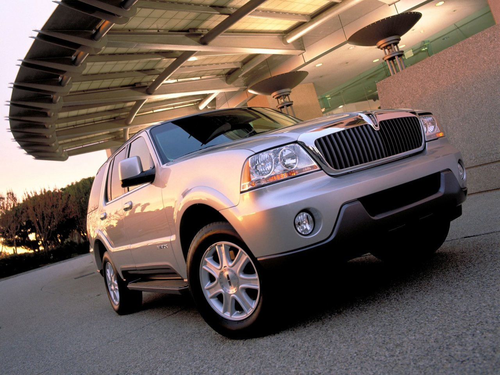

Вопросы с тегом «енакиево»

Войти через mail.ru Главная страница Вопросы и ответы Теги Задать вопрос О проекте
Правила · Помощь ⇢ Все теги ⇢ Теги на букву «Е»
Вопросы с тегом «енакиево»
Хам Не Сын Ноя!Есть ли кто-нибудь из Енакиево? енакиево
4 года 310 3 0 Винецкая Клара.Галина Каплунова -Вивенцова(Енакиево Донецкая Обл.-Натания-Израиль) просит откликнуться своих сестер Каплуновых-Андреевых со ст Иловайскоеработают на ж/д вокзале:Люда0кассир,а Ирина-дежурная по вокзалу...если Вы пострадали ..Галя предлагает Вам свою кв в Ждановке))) сестра ирина израиль галя обл вокзал галина андреев дежурная енакиево каплунов ждановка
8 лет 0 0 0 Нельзя ответить, потому что автор удалил этот вопрос Далее Ирина ДушкаПочему о городе Енакиево в военных сводках нет ни одного сообщения? сообщение город сводка енакиево
6 лет 55 8 0 Нельзя ответить, потому что автор удалил этот вопрос Далее Юрка ФилёвА Енакиево далеко от тебя ? енакиево
7 лет 7 1 0 Нельзя ответить, потому что автор удалил этот вопрос Далее Ольга Волковатак ты с енакиево?) енакиево
8 лет 7 1 0 Нельзя ответить, потому что автор удалил этот вопрос Далее Олег Киреев FFI - Алла. Николаев (Опель Ланос, Opel Vectra).
FFI - Результат на мотоцикле (Honda).
FFI результаты на машинах (Nissan Primera) и (Mercedes-Benz ML 320)
FFI - результат Безверхова Сергея на машине (Lada Priora ).
FFI - результат Бондаренко Геннадий Енакиево на таврии.
FFI - Влад Прес Харьков (Славута).
FFI - результат на (Opel Kadett) экономия на топливе более 20%
Renault Logan - экономит на бензине более 20% из за FFI
Opel Astra - снизила расход топлива более чем на 20% на MPG
Renault Logan - расход упал более чем на 20% на топливе с MPG
Заправка Бустом (Boost)Возле Мелитополя.
Форд Сиера - расход топлива сократился на 20% на MPG
ВАЗ 2114 - снизил расход на 2,5 литра АИ 92 (MPG)
MPG - Nissan Maxima - снизил расход бензина на 20% - КАК?
FFI - Результат в Гуково на Renault Logan (Рено Логан)
Skoda Fabia стала экономичнее на 20% НА ЭТОМ!!!
FFI - в Днепропетровскcке на (Hevrolet Avio) экономия 20%
FFI - в Испании на Opel Astra экономия на БЕНЗИНЕ более...
FFI - Замечательный результат на (Ниве) экономия 20%
FFI - экономлю на топливе (с ноября 2009 года) Mitsubishi Outlander
FFI - экономия на топливе у Сhevrolet Lachetti более 20%
КАК Daewoo Lanos приносит в карман 20% на топливе?
FFI -ВОТ ЭТО Экономия на топливе - газонокосилка,Volkswagen Golf
КАК Ваз 2109 - экономит на топливе от 20%
КАК Хонда Аккорд экономит на топливе 20%.
Toyota Vista - экономия на топливе более 20% на MPG BOOST.
Экономия на топливе более 20% на Chevrolet Aveo, ВАЗ Lada Калина год машина результат калина карман мотоцикл литр испания сергей ноябрь экономия бензин расход топливо алла аккорд геннадий влад ваза заправка форд бондаренко николаев ланос харьков нива логан опель таврия рено хонда прес мелитополь славута гуково енакиево
А откуда вы?из енакиево,, енакиево
8 лет 7 1 0 Нельзя ответить, потому что автор удалил этот вопрос Далее Артем ФаблиновЕнакиево есть??? енакиево
8 лет 34 5 0 Нельзя ответить, потому что автор удалил этот вопрос Далее